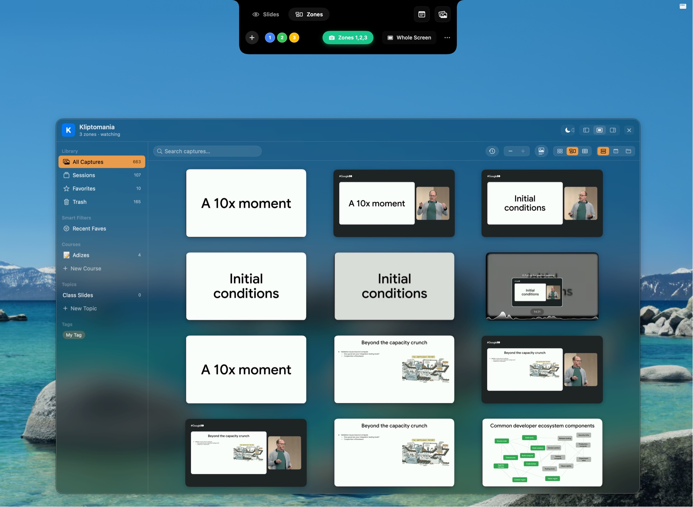
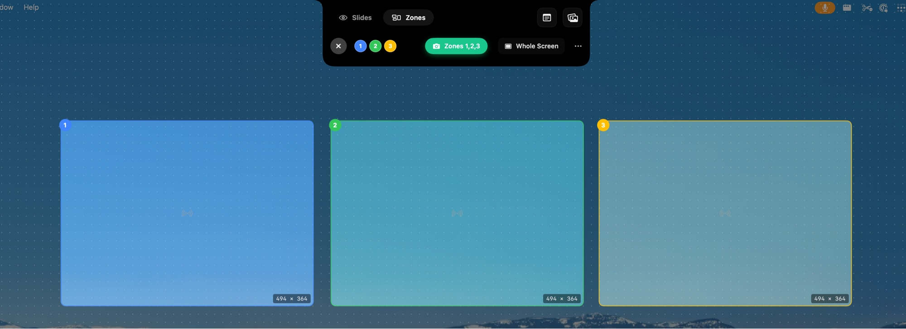
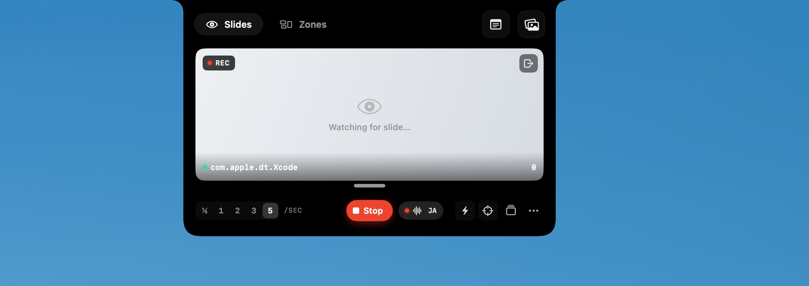
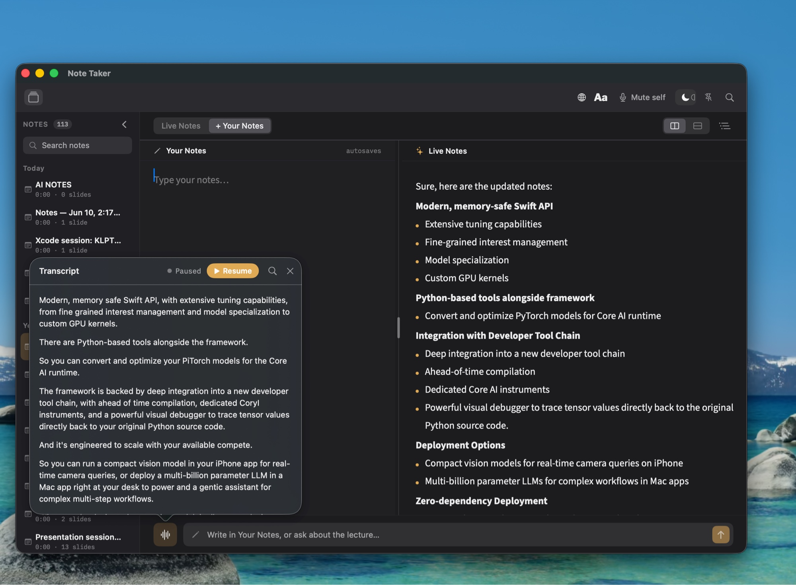

Welcome to the KLPT beta
For you and your AI. For decades.
Thanks for being one of the first. This is what KLPT is, how to try it, and how to tell us what you think.

Why KLPT exists
A 45-minute talk takes 45 minutes to revisit. You can't skim a lecture the way you skim a book.
Slides, demos, diagrams, voice — all locked inside a pixel stream that AI tools can't easily reach.
Your favorite course or conference talk isn't downloadable. The knowledge is rented, not owned.
KLPT watches with you. It pulls out the slides, the words, and the moments — and saves them as something you and your AI can use forever.
A different kind of tool
Meeting notetakers
Help you remember today's call.
Optimized for the next 24 hours.
KLPT
Builds a personal library you'll mine for years.
Optimized for the next decade.
How it works
Drag a Zone over the slide area, the speaker, and anything else worth keeping. Or just capture the whole screen. KLPT only watches the rectangles you choose.

When the slide changes, KLPT captures it. When the speaker talks, KLPT transcribes it — in English, Japanese, and more. Live Notes are written as it goes, so you can stay present.

Every slide, every transcript, every session — searchable, taggable, and ready for your AI to synthesize. This is your shelf, growing one talk at a time.
Live Notes
KLPT generates notes from what it hears and what it sees — structured, headed, and ready to read. You can add your own thoughts alongside, or ask the lecture a question.

Try this first
Open a talk you've been meaning to watch.
A YouTube keynote, a course lecture, a recorded conference session — anything.
Drag a Zone over the slide area, and one over the speaker.
Two zones is enough. KLPT will figure out the rest.
Hit Zones 1,2,3 and press play on the video.
Let it run. Make a coffee. Come back.
Open the library.
That's your new shelf. Now imagine a year of it.
You're not testing a product
This is a small, deliberate beta. What I most want to learn from you:
Send feedback on GitHub
Issues, ideas, screenshots, half-formed thoughts — all welcome.